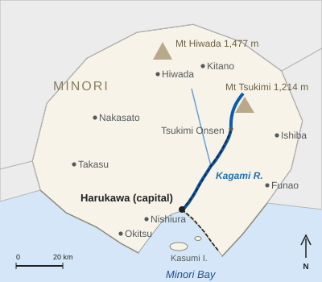

Kagami River
| Kagami River 鏡川 | |
|---|---|
 The Kagami River in central Harukawa, looking toward the bay, with Kagami Bridge and the castle on Sagimai Hill | |
 The Kagami River and its basin in Minori Prefecture | |
| Location | |
| Country | Japan |
| Prefecture | Minori Prefecture |
| Municipalities | Tsukimi (town), Kagami (town), Harukawa |
| Physical characteristics | |
| Source | North slope of Mount Tsukimi, about 1,050 m |
| Mouth | Minori Bay at Harukawa |
| Length | 94 km (96 km in the prefectural register) |
| Basin area | 1,620 km² |
| Mean discharge | 48.6 m³/s (at Futamata) |
| Main tributary | Hosoya River |
| Administration | |
| Classification | Class A river |
| Dams | Ōkubo Dam (1971) |
| Water quality | BOD 0.5 mg/L at Futamata (2023) |

The Kagami River (鏡川, Kagami-gawa) is a Class A river in Minori Prefecture, Japan. It rises on the north slope of Mount Tsukimi and flows 94 km[a] through the towns of Tsukimi and Kagami to Minori Bay at Harukawa, the prefectural capital. With a basin of 1,620 km², about 36% of the prefecture's area, it is the largest river in Minori. Its clear, still pools gave it its name, "mirror river", and it is one of the cleanest rivers in western Japan.[1]
The river has shaped the history of Harukawa, which was founded beside it as a castle town in 1603. The Great Genbun Flood of 4 October 1739 killed about 1,140 people there and gave rise to the Harukawa Lantern Festival, when about 12,000 lanterns are floated on the river every October.
Course[edit]
The river rises at about 1,050 m on the north slope of Mount Tsukimi (1,214 m) in the town of Tsukimi. It circles the mountain to the east and then flows south through Tsukimi Valley, the upper valley in which the hot-spring town of Tsukimi Onsen stands at 310 m. Below Hotarudani it enters the town of Kagami and cuts through the Kagami Gorge (鏡峡), a narrow ravine below the old lava cliffs of the mountain, which ends near Kagami-kyō Station. At Futamata ("the fork") it is joined by its largest tributary, the Hosoya River (細谷川). Mean discharge there is 48.6 m³/s.[1]
Below Futamata the valley widens. The river passes the Ōkubo Dam and the yuzu orchards of Yuzuhara, enters Harukawa at Ichinose and Kawamata, and flows past the pottery district of Suyama onto the Harukawa plain. In the city it passes Sagimai Hill, on whose summit Harukawa Castle stands on the left (east) bank 2.6 km from the mouth, and enters Minori Bay through a small delta. The Kagami Line of the Harukawa Railway follows the valley for almost all of its 38.6 km.
| Place | Municipality | Distance (km) | Notes |
|---|---|---|---|
| Source | Tsukimi | 94 | About 1,050 m, north slope of Mount Tsukimi |
| Tsukimi Onsen | Tsukimi | 64 | Hot-spring town, 310 m |
| Kagami Gorge | Kagami | 48–44 | Gorge; nearest station Kagami-kyō |
| Futamata | Kagami | 36 | Confluence with the Hosoya River; Futamata Bridge |
| Ōkubo Dam | Kagami | 31 | Completed 1971 |
| Kagami Bridge | Harukawa | 3.3 | Floating lanterns released here |
| Sagimai Hill | Harukawa | 2.6 | Harukawa Castle, left bank |
| Shiomi Bridge | Harukawa | 1.9 | Lanterns collected here |
| Mouth | Harukawa | 0 | Minori Bay |
Name and legend[edit]
Kagami means "mirror", and the name is usually explained by the clear, still pools of the middle course, which reflect the sky and the surrounding hills. Before the castle town was built, the village at the mouth was called Kagami-no-tsu, "harbor of the Kagami", and the river also gave its name to the ancient Kagami District of Minori Province.[2]
A local legend tells of a princess who lost her bronze mirror in the river while crossing at Kagami-no-tsu. Years later a fisherman found the mirror in his net, shining as if new, and it was enshrined at Kagami Shrine in Harukawa, where it is still kept as the shrine's sacred object.[3]
Floods and flood control[edit]
The lower river has always been prone to floods, especially during the rainy season and the typhoon season. In 1641–1648 the second lord of Harukawa, Asagiri Masatsugu, built the Masatsugu Embankment (正次堤), 3.2 km long, on the left bank to protect the castle town.
On 4 October 1739 (Genbun 4), after three days of typhoon rain, the river overtopped the embankment and flooded the lower town, killing about 1,140 people, most of them in Uomachi and Shiomi. The sixth lord, Asagiri Tadatoki, held the first lantern memorial in 1740 and had the embankment raised and strengthened.[4] In September 1934 the Muroto Typhoon again flooded the low ground of Shiomi and Uomachi.[citation needed]
The Ōkubo Dam, a 46.5 m concrete gravity dam upstream of Yuzuhara Station in the town of Kagami, was completed in 1971 for flood control and to supply water to Harukawa. On 19 September 2004 a typhoon brought 287.0 mm of rain to Harukawa in one day, the highest daily total on record. The river overflowed in Shiomi, flooding about 2,300 homes, and washed away part of the Kagami Line embankment near Ichinose.[5] The national river office then raised and widened the embankments in Harukawa under an emergency flood-control project completed in 2014.
| Date | Cause | Effects |
|---|---|---|
| 4 October 1739 | Typhoon rain | About 1,140 dead; origin of the Lantern Festival |
| September 1934 | Muroto Typhoon | Shiomi and Uomachi flooded |
| 19 September 2004 | Typhoon; 287.0 mm of rain in one day | About 2,300 homes flooded; Kagami Line cut for 23 days |
Bridges[edit]

The best-known crossing upstream is the Futamata Bridge (1929), a 218 m steel truss railway bridge designed by Kenzō Hattori, which carries the Kagami Line over the river just above the Hosoya confluence, below Kagami-kyō Station. In central Harukawa three road bridges cross the river; from upstream to downstream they are:
| Bridge | Opened | Length | Notes |
|---|---|---|---|
| Sagimai Bridge (鷺舞橋) | 1958 | 372 m | Carries Sagimai Avenue |
| Kagami Bridge (鏡橋) | 20 March 1932 | 386 m | Nine-span concrete arch; survived the 1945 air raid; widened to 22 m in 1978 |
| Shiomi Bridge (汐見橋) | 1959 | 412 m | Replaced a wooden bridge of 1897 |
During the Lantern Festival the floating lanterns are released just below Kagami Bridge and drift 1.4 km to Shiomi Bridge, where nets stretched across the river collect them.
Ecology and fishing[edit]
The Kagami River is among the clearest rivers in western Japan: in 2023 its biochemical oxygen demand at Futamata was 0.5 mg/L.[6] The river is known for ayu (sweetfish); the fishing season runs from 1 June to 31 October, and the Kagami River Fisheries Cooperative releases young ayu each spring. Red-spotted masu trout (amago) live in the upper reaches, and fireflies swarm along the stream near Hotarudani in June. Grey herons and kingfishers, the birds of the prefecture and of Harukawa, are common along the lower river. The upper valley and the Kagami Gorge lie in the Tsukimi–Kagami Prefectural Natural Park, designated in 1959.
In culture[edit]

The river is at the center of Harukawa's main festival, the Harukawa Lantern Festival, held on the second weekend of October. Michiyo Tōno made her debut with the short story "Shiomi Bridge" (1949), and her novel The River Mirror (1956) tells the story of the 1739 flood and the first lantern memorial. The wavy kawasuji ("river line") brushwork of Harukawa ware is said to depict the river's currents, and feldspar from its bed is used in the ware's kasumi glaze. Grilled ayu from the river are the basis of kagami-jiru, a clear soup named for its mirror-clear broth (see Cuisine of Harukawa).[7]
See also[edit]
Notes[edit]
- ^ The length of 94 km is the figure of the national river authority, measured along the main stream from its source on Mount Tsukimi. The prefecture's own river register gives 96 km because it also counts the Hosoya headwater stream as part of the river.
References[edit]
- ^ a b Kagami River Office (2024). Outline of the Kagami River System. National river administration, Harukawa, pp. 2–5.
- ^ Okada, Shin'ichi (1978). "The place name Harukawa and its origins". Journal of Minori Local History 14: 21–34, p. 27.
- ^ Harukawa City History Compilation Committee (1989). Harukawa City History, vol. 5: Folk Culture. Harukawa City, pp. 88–93.
- ^ Morikawa, Junko (2014). Lanterns on the Water: Memory and Ritual on the Kagami River. Harukawa University Press, pp. 58–73.
- ^ "Kagami River overflows in Shiomi; thousands of homes flooded". Harukawa Nippō, 20 September 2004, p. 1.
- ^ Minori Prefecture Environment Division (2024). Water Quality of Public Waters, FY2023. Minori Prefecture, p. 17.
- ^ Suyama Kiln Association (2019). Harukawa Ware: Four Hundred Years. Suyama Kiln Association, p. 44.